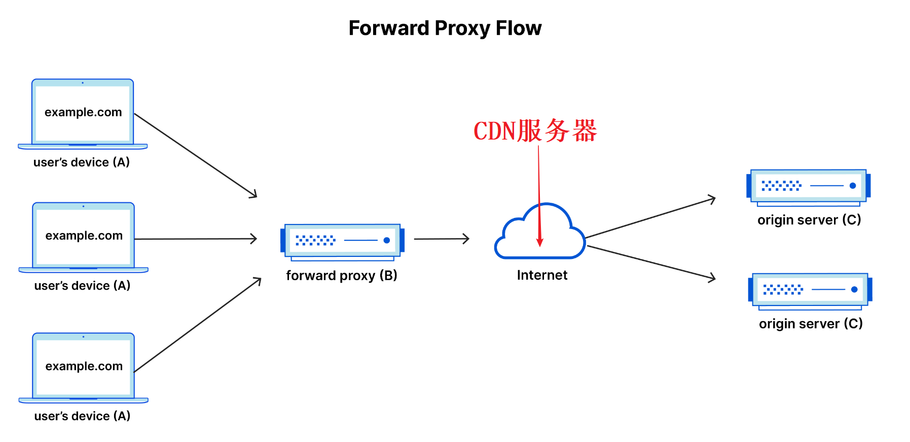
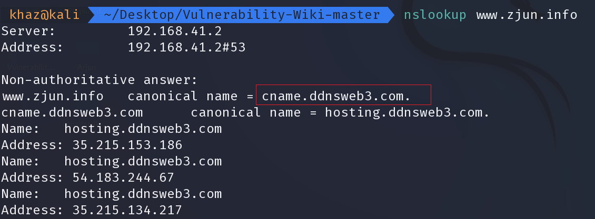
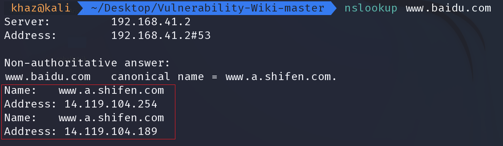
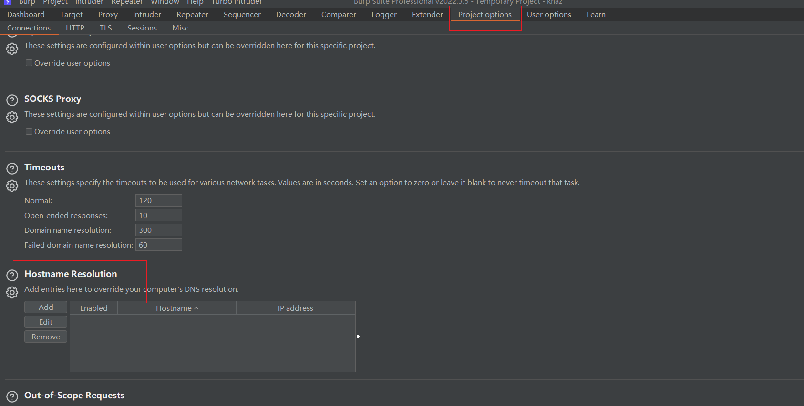
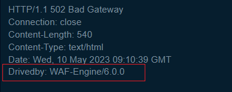
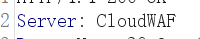

为什么
根据对应的指纹进行特定攻击
前端：JS,WebPack 后端：后端语言缺陷 组件：框架，中间件漏洞 端口服务：特定协议，应用攻击识别安全设备
指纹识别原理
TideFinger/Web指纹识别技术研究与优化实现.md at master · TideSec/TideFinger
- 主动识别：特定文件的MD5，特定路径
- 被动识别：关键字匹配
手工判断指纹
前端js代码，文件名，路径等放到github，gitee搜
icon信息等放到空间搜索引擎
版权标识如url，logo等（可能注释或者删除了）
从URI中发现
CDN
FromBYPASS-CDN/CDN 2023 完全攻击指南（一）.md at main · bin-maker/BYPASS-CDN · GitHub
是什么
CDN（Content Delivery Network），中文全称为内容分发网络。
简单的说就是一组在不同运营商之间的对接点上的高速缓存服务器，把用户经常访问的静态数据资源直接缓存到节点服务器上，当用户再次请求时，会直接分发到离用户近的节点服务器上响应给用户，当用户有实际数据交互时才会从远程Web服务器上响应，这样可以大大提高网站的响应速度及用户体验。
这里CDN节点就充当了反向代理的作用

为什么要绕过
- 寻找真实IP，这样才可以进行端口扫描
- 绕过云Waf
判断CDN
观察请求响应的返回数据的头部，是否有 CDN 服务商标识
通过不同定位地点的 ping 测试，如果没有使用CDN，则只会显示一个IP地址
判断 IP 是否在常见 CDN 服务商的服务器 IP 段上
若 asp 或者 asp.net 网站返回头的 server 不是 IIS、而是 Nginx，则多半使用了nginx反向代理到 CDN
利用 Nslookup 查询域名
服务器名称

同一个域名解析对应多个 IP 地址

CDN绕过方法
CDN费用问题
CDN 加速需要支付一定的费用，所以子站，国外很可能没有部署CDN。
历史 DNS 记录
邮箱法
- 让目标邮件服务器发送邮件给我们的邮箱，通过查看收到的邮件源码在一定情况下可以找到真实IP（可以看到对方使用的邮件服务器IP）
- 使用目标网站的邮件发送功能，将邮件发送给一个不存在的邮箱地址，因为找不到邮箱地址所以发送必然是失败的，这里邮件服务器可能会返回一个错误消息通知，在这个消息通知中就包含了该邮件服务器的真实IP
常见场景
- RSS 订阅
- 邮箱注册、激活处
- 邮箱找回密码处
- 产品更新的邮件推送
- 某业务执行后发送的邮件通知
- 员工邮箱、邮件管理平台等入口处的忘记密码
空间测绘引擎
favicon.ico 哈希特征
网页源码特征值
在服务器源 IP 地址允许访问并且返回的也是类似的网站内容情况下，可以通过侦察页面源码中 JS 、CSS 、HTML 等一系列静态特征值，然后用 Shodan 、Zoomeye 、Censys 等搜索引擎进行匹配搜索，从而定位 IP 。
真实 IP 使用
在获取到真实IP后，通过直接访问IP可能无法访问
修改 hosts 文件
burpsuite 测试

WAF判断
查看返回包有无WAF字样


查看拦截页面信息
通过一些明显的注入来触发waf
83个Waf拦截页面-腾讯云开发者社区-腾讯云 （5年前）
30几款常见WAF的拦截页整理 （2021年）